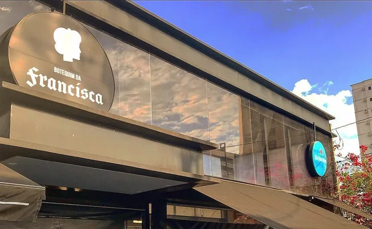
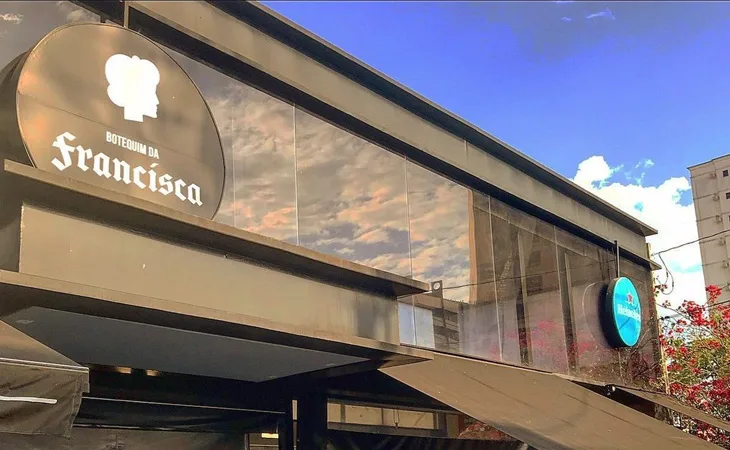

Semana Acadêmica 2025
A Faculdade Exemplo realizou sua tradicional Semana Acadêmica com palestras e workshops.
O sabor que transforma o seu dia!
Venha descobrir o melhor da culinária de Sorocaba!
Olá, fãs da culinária! Bem-vindo à Wiki da Culinária, o seu passo inicial para o conhecimento sobre as melhores delícias das padarias, confeitarias, restaurantes e muito mais de Sorocaba!
O Wiki Sabores Sorocaba nasceu de uma verdade inegável: Sorocaba é um verdadeiro caldeirão de experiências gastronômicas!
Tudo começou com um grupo de sorocabanos fãs de uma boa comida – aqueles que vivem para desvendar novos sabores, que têm um "radar" para aquele restaurante escondido que serve a melhor feijoada, para a confeitaria que faz o doce dos deuses, ou para a padaria que oferece o pão mais fresco da manhã. Percebemos que, embora a cidade fervilhasse com opções maravilhosas, desde as cantinas italianas tradicionais, passando pelos food trucks inovadores, até os botecos com petiscos de dar água na boca, faltava um local onde toda essa riqueza fosse compilada e compartilhada.
As conversas eram sempre as mesmas: "Onde jantar hoje à noite?", "Qual o melhor lugar para aquele café da tarde especial?", "Você conhece um bom restaurante japonês na cidade?", "Existe alguma hamburgueria nova que valha a pena?". A informação estava dispersa, em grupos de mensagens, conversas informais ou avaliações isoladas.
Foi então que, em um encontro regado a boas risadas e excelentes petiscos em um dos muitos points gastronômicos da cidade, a ideia amadureceu: "Por que não criamos um 'wiki' que celebre e catalogue o melhor da culinária de Sorocaba? Um lugar onde moradores e visitantes pudessem descobrir, avaliar e compartilhar suas experiências em restaurantes, padarias, confeitarias, bares e todos os templos do sabor da nossa terra?"
Assim, em 2024, o Wiki Sabores Sorocaba foi lançado. Nosso objetivo é ser o seu guia definitivo para o universo gastronômico sorocabano, um portal colaborativo construído pela paixão de nossa comunidade por boa comida e momentos inesquecíveis à mesa.
Venha explorar conosco e embarque em uma jornada deliciosa pelos mais variados e surpreendentes sabores que Sorocaba tem a oferecer!
Uma das padarias mais tradicionais de Sorocaba, com inúmeras localidades pela cidade toda!
O fermento que tanto faz crescer a Padaria Real vem do coração da família Souza, empreendedores apaixonados pela gastronomia.
Fundada em 1985, a Padaria Real começou como um pequeno negócio familiar e, ao longo dos anos, conquistou o paladar dos sorocabanos com seus pães artesanais, doces irresistíveis e um atendimento acolhedor que faz você se sentir em casa... Para saber mais sobre a história da Padaria Real, clique aqui.
Para conferir as localidades e as avaliações, clique aqui.
Criado pelo experiente Osmânio Luiz Rezende, um dos mais renomados restauranters do Brasil, se apresenta com enfoque na culinária clássica italiana.
A qualidade dos ingredientes utilizados na preparação dos pratos é o ponto forte do La Doc, garantindo uma experiência gastronômica única e memorável. Para saber mais sobre o La Doc, clique aqui.
Para conferir a localidade e as avaliações, clique aqui.
 

Com um ambiente acolhedor e descontraído, o Botequim da Francisca é o lugar perfeito para apreciar uma boa comida e um drink especial.
O Botequim da Francisca é famoso em Sorocaba por seu famoso pastel de pera com mel e gorgonzola, a grande variedade de cervejas artesanais e importadas (aproximadamente 250 rótulos) e a qualidade da sua gastronomia, que vai de pratos tradicionais a opções mais elaboradas como carnes grelhadas e peixes... Para saber mais sobre o Botequim da Francisca, clique aqui.
Para conferir a localidade e as avaliações, clique aqui.
Com um ambiente acolhedor e um cardápio diversificado, o Santa Crema Café é o lugar ideal para quem busca um bom café da tarde.
O café é um delicioso pretexto para encontros e momentos e o Santa Crema quer que este pretexto seja a melhor coisa do seu dia. Servem a felicidade que faz a diferença na sua xícara, acreditam que servir um bom café vai além da qualidade dos grãos... Para saber mais sobre o Santa Crema, clique aqui.
Para conferir a localidade e as avaliações, clique aqui.
Quer um doce que derreta na boca? A Dona Baunilha é o lugar certo!
Com uma variedade de doces e sobremesas, a Dona Baunilha encanta a todos com suas criações. Não deixe de experimentar!
Acesse o site deles para mais informações: Clique aqui
Para conferir a localidade e as avaliações, clique aqui.
Nosso corpo docente é formado por mestres e doutores em áreas como Administração, Direito, Computação, Engenharia Civil e Medicina.
Os professores da Faculdade Exemplo atuam no mercado e desenvolvem pesquisas acadêmicas em inovação, tecnologia e saúde.
A Faculdade Exemplo realizou sua tradicional Semana Acadêmica com palestras e workshops.
Firmamos acordo com universidades estrangeiras para intercâmbio de alunos.
"A Faculdade Exemplo mudou minha vida. Hoje atuo em uma grande empresa graças à formação recebida."
"Professores qualificados e ótima estrutura. Recomendo a todos."